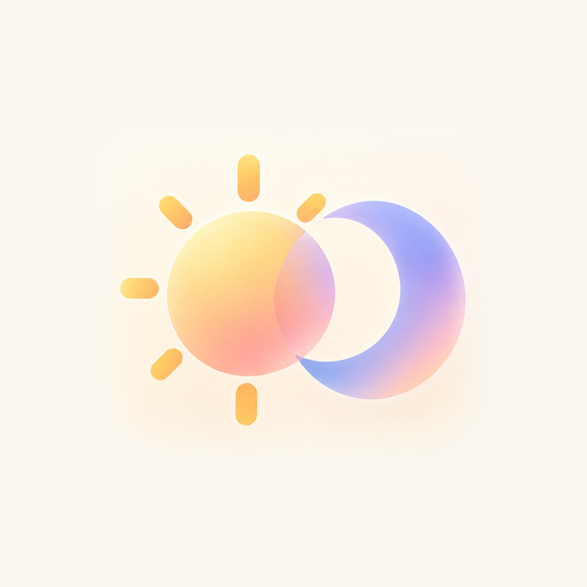
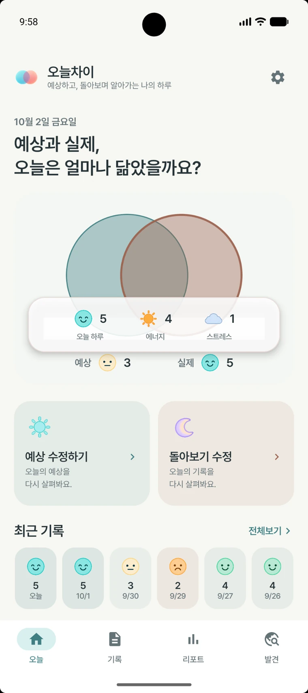
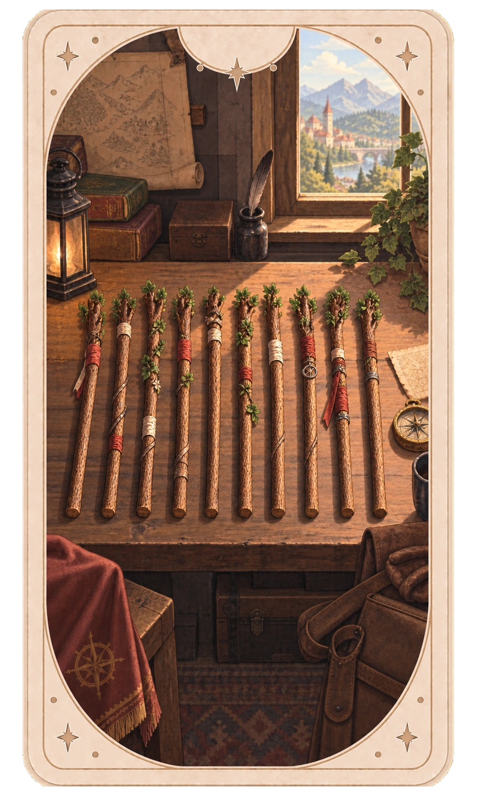
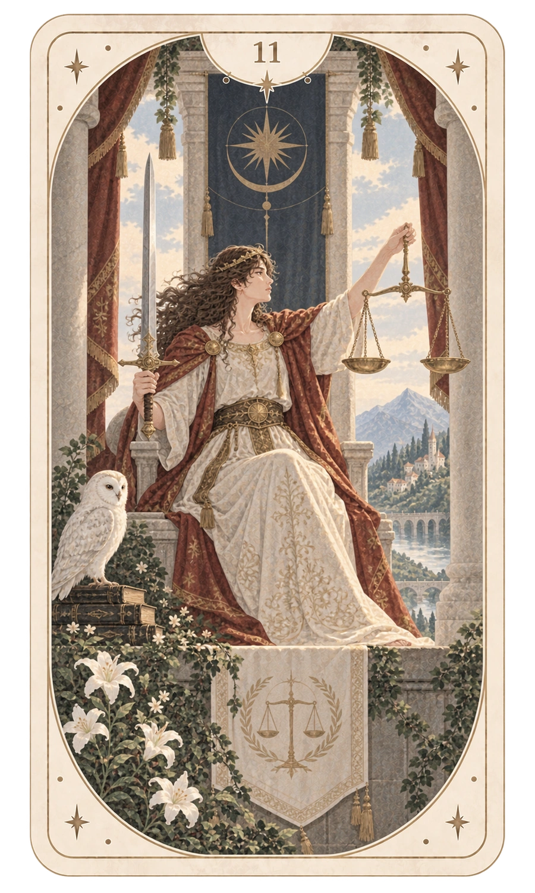
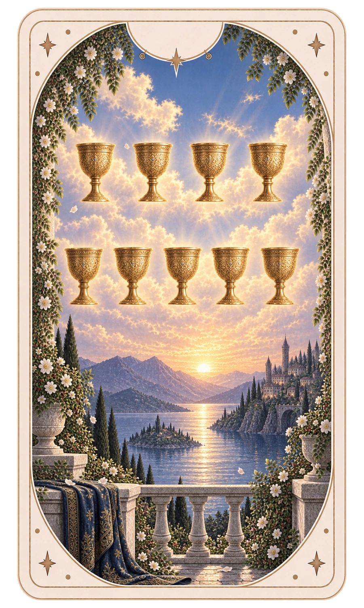
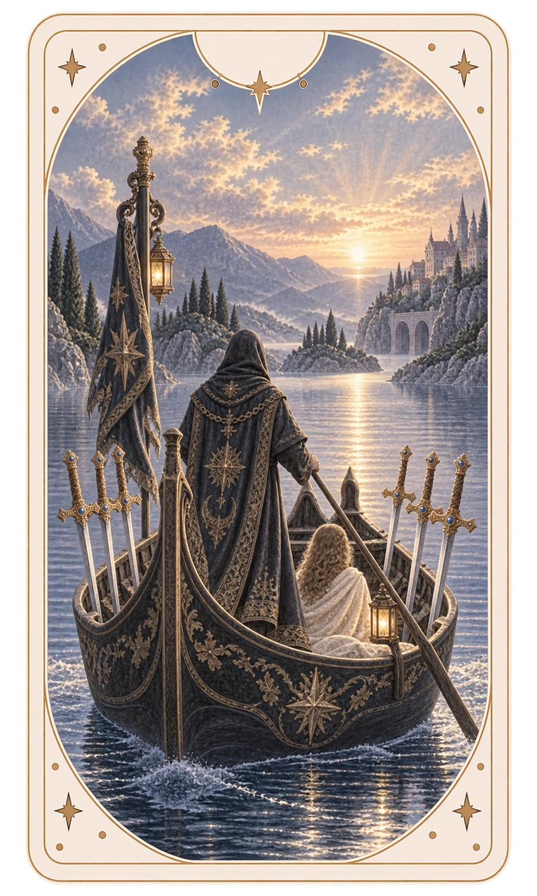
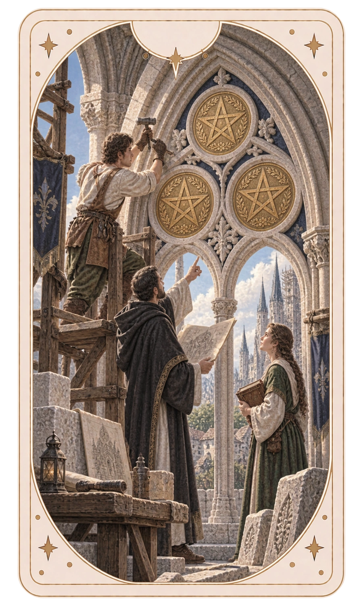
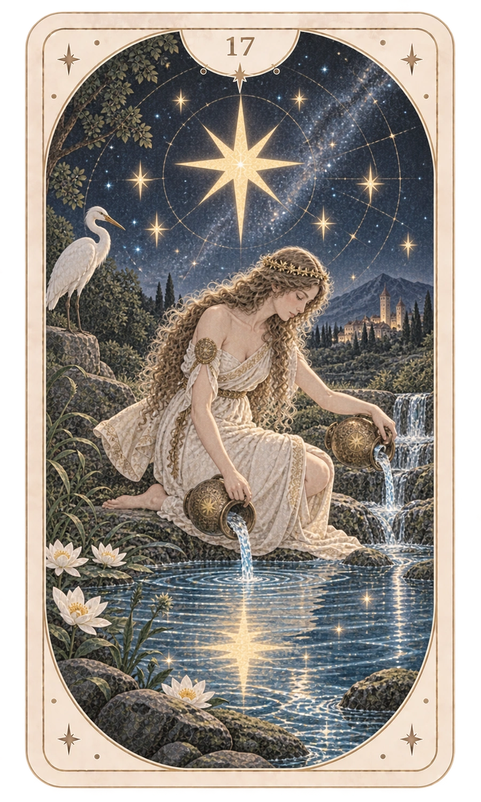
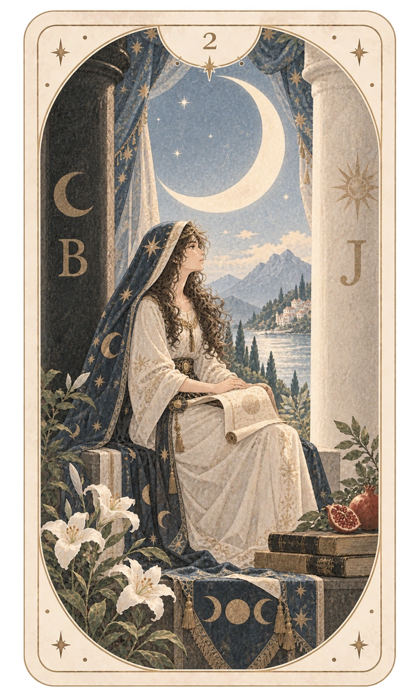
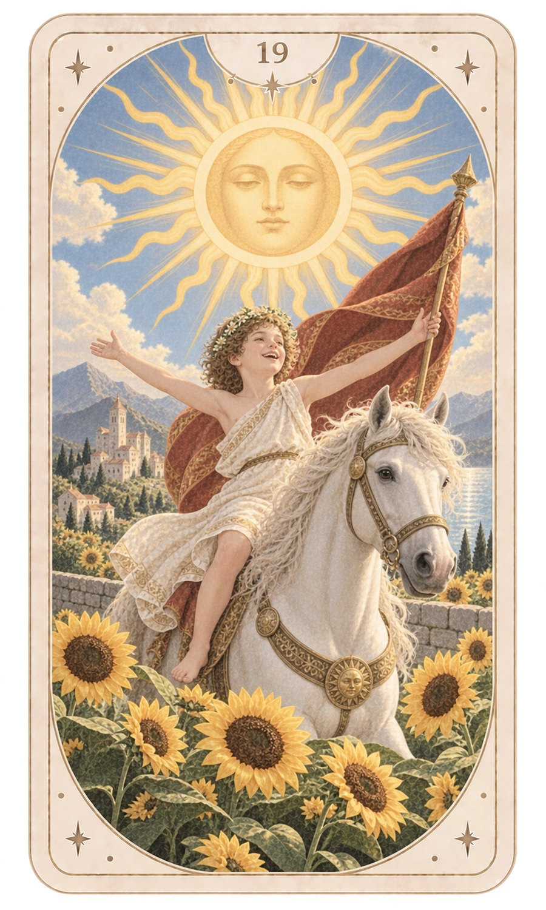

예상하기
오늘, 가볍게 시작하기
오늘 하루와 에너지, 스트레스를 가볍게 골라 지금의 예상을 남겨요.
오늘 하루오늘은 어떤 하루가 될 것 같나요?
3 / 5에너지오늘 움직일 힘은 어느 정도일까요?
2 / 5스트레스오늘 느낄 부담은 어느 정도일까요?
4 / 5
ONEULCHAI
오늘의 기록에서 내 흐름을 발견해요.예상하고, 돌아보며 알아가는 나의 하루
오늘을 미리 예상하고, 하루 끝에 돌아보며,
기록이 쌓이면 나만의 패턴을 발견해요.

오늘 · 예상하기와 돌아보기
같은 기준으로 하루의 앞과 뒤를 남기면, 예상과 실제 사이의 작은 차이가 자연스럽게 기록돼요.
예상하기
오늘 하루와 에너지, 스트레스를 가볍게 골라 지금의 예상을 남겨요.
돌아보기
아침과 같은 기준으로 실제 하루를 남기고, 기억에 남는 항목과 한 줄 기록을 덧붙여요.
기록
달력에서 흐름을 보고, 날짜를 열면 예상과 실제의 차이부터 한 줄 기록과 그날의 카드까지 다시 이어서 볼 수 있어요.
예상보다 조금 낮았지만, 에너지는 오히려 더 높았어요.
생각보다 괜찮았고, 오후에는 힘도 더 났다.

리포트 · 내 패턴
하루하루의 기록이 쌓이면 예상 습관, 실제 흐름, 요일 리듬과 함께 반복되는 항목이 조금씩 보여요.
오늘 하루 점수에서 예상과 실제 차이가 가장 컸던 날이에요.
생각보다 괜찮았던 날은,
내가 나를 조금 덜 걱정해도 된다는 기록이 되기도 해요.
예상 5 → 실제 5 조합이 가장 자주 나타났어요.
좋고 나쁨이 아니라 예상과 실제가 어느 방향으로 달랐는지 보여줘요.
토요일에 오늘 하루 점수가 상대적으로 높게 나타났어요.
스트레스가 전체 평균보다 낮게 나타난 경우가 많았어요.
단어를 눌러 반복된 표현을 가볍게 살펴볼 수 있어요.
오늘의 카드도 기록 속에서 함께 쌓여요. 어떤 카드를 자주 만났는지 한눈에 볼 수 있어요.




발견 · 오늘의 카드
오늘의 카드를 만나고, 다시 만난 카드에는 새로운 해석이 쌓여요. 정방향과 역방향도 서로 다른 만남으로 기록합니다.
세 장 중 마음이 가는 카드를 눌러보세요. 카드를 뒤집으면 오늘 만난 카드와 작은 메시지가 나타나요.



계열별로 얼마나 발견했는지, 아직 만나지 못한 카드는 얼마나 남았는지 한눈에 살펴볼 수 있어요.
REMINDER
예상하기와 돌아보기 알림은 각각 켜고 끌 수 있고, 시간도 언제든 바꿀 수 있어요.
아직 기록이 없다면 설정한 시간에 알려드려요.
PRIVACY
생활 기록은 기본적으로 기기 안에 저장하고 분석합니다. 외부 서비스가 필요한 부분은 필요한 범위에서만 처리합니다.
예상·돌아보기·카드 기록은 기본적으로 사용자 기기에 남습니다.
한 줄 기록의 분석과 패턴 계산도 기기 안에서 수행됩니다.
광고와 구매에 필요한 정보만 Google 서비스에서 별도로 처리됩니다.